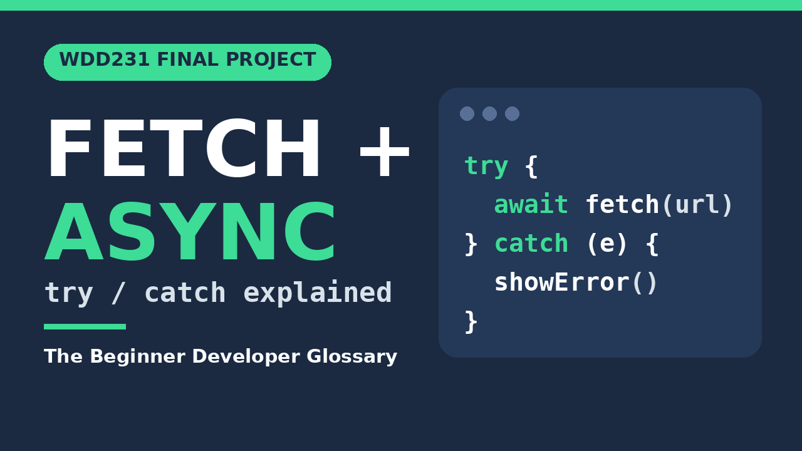

WDD231 project demonstration
Project demonstration
This video shows how The Beginner Developer Glossary loads its data with the Fetch API, handles asynchronous work with async/await and try/catch, and turns the results into the glossary cards you see on the site.

Watch the demonstration on YouTubeWhat the video covers
- Fetching the glossary JSON data with the Fetch API.
- Using async/await and try/catch for asynchronous data loading.
- Dynamically generating glossary cards from the data.
- Searching, filtering, and using array methods.
- Using localStorage for saved glossary terms and theme preference.
- Opening and interacting with the accessible term-detail dialog.